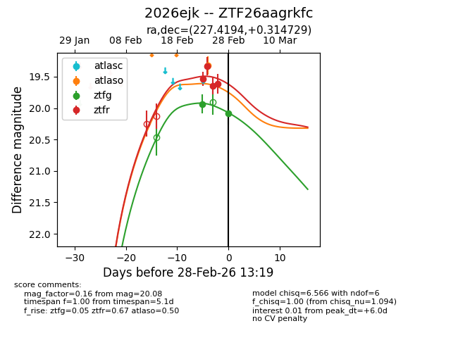
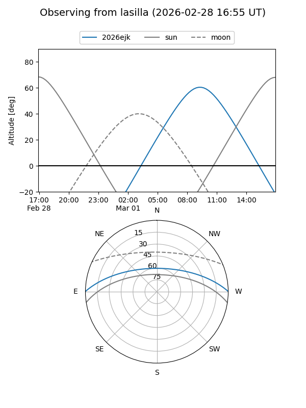
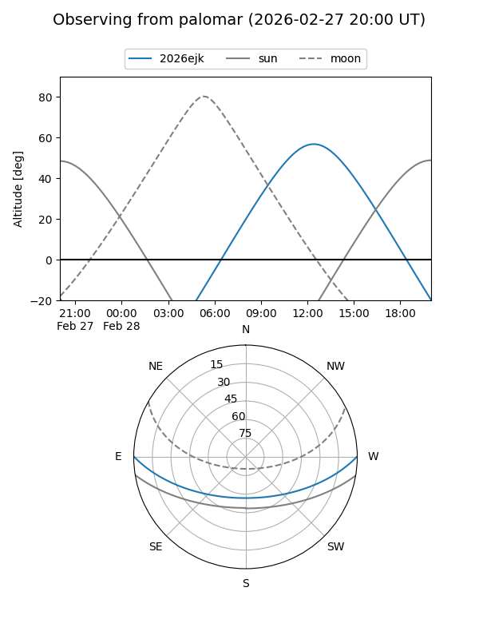
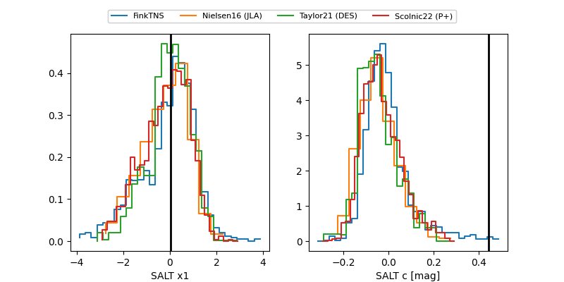

2026ejk
Target 2026ejk at 2026-02-28 13:21
Aliases and brokers:
FINK: link
Lasair: link
ALeRCE: link
TNS: link
YSE: link
alt names
ZTF26aagrkfc (ztf,fink_ztf)
2026ejk (tns,yse)
Coordinates:
equatorial (ra, dec) = 227.4194,+0.31473
equatorial (HMS+DMS) = 15:09:40.66,+00:18:53.02
galactic (l, b) = (359.7730,+47.34342)
Flags:
Photometry:
last atlaso=19.32, ztfg=20.08, ztfr=19.61
1 atlaso, 2 ztfg, 4 ztfr detections
Lightcurve

Visibility


Additional plots
